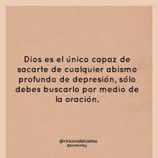
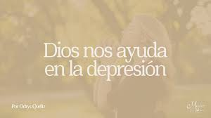
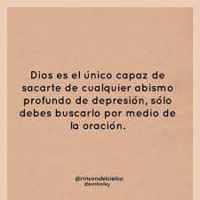
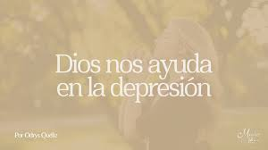

Sonrisa Feliz
¡Vive cada día al máximo!
¡Vive cada día al máximo!
La depresión es una condición emocional que puede afectar tus pensamientos, sentimientos y acciones. No es solo estar triste; puede implicar pérdida de interés, cansancio constante, problemas para dormir o sentir que nada tiene sentido. Es importante saber que no estás solo y que pedir ayuda es un acto de valentía.
Vencer la depresión requiere tiempo, apoyo y pasos pequeños. Habla con alguien de confianza, mantente activo físicamente, cuida tu alimentación, y busca actividades que te hagan bien. La oración y la conexión con Dios pueden darte una luz de esperanza cuando más la necesitas.
Tu vida importa porque eres único y nadie puede ocupar tu lugar. Tienes talentos, propósitos y personas que te valoran más de lo que imaginas. Aun cuando no lo sientas, tu existencia tiene un gran valor. Dios tiene un plan para ti, y cada día es una nueva oportunidad.
 


